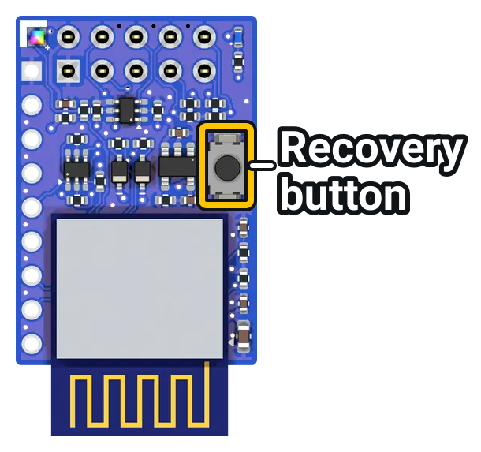

Recovery
Connection problems
- Check your microcontroller board is powered and Airfrog's status LED is lit.
- Open http://airfrog.local/, or http://HOSTNAME.local/ if you changed the hostname. If your device can't open .local addresses, use the Airfrog IP address from the list of connected devices on your router.
- If Airfrog can't join your WiFi network for 10 minutes, it starts the
airfrog-XXXXWiFi network. Join with passwordairfrogx, open http://192.168.4.1/ and update the WiFi settings.
If you still can't connect to Airfrog, start it in recovery mode. If that doesn't help, restore factory defaults.
Recovery mode
In recovery mode Airfrog starts with extensions disabled.
- Hold the recovery button down and power the microcontroller board attached to Airfrog.
- The status LED starts to blink slowly. Release the button within 10 seconds.
- Try removing extensions one by one and restarting Airfrog normally.

Factory defaults
Restoring factory defaults erases all of your settings and extensions.
- Hold the recovery button down and power the microcontroller board attached to Airfrog.
- The status LED starts to blink slowly. Keep the button down for more than 10 seconds until the LED starts blinking quickly. Then release it.
- Airfrog will reboot with its default settings. Re-configure WiFi as described in Getting started.
Commissioning
If the above steps don't recover your Airfrog, re-commission it.